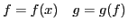
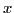
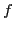
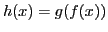
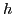
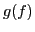
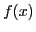
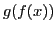

Many complex multiphysics models employ composite functions, where each member function represents a different physics. A simple example of this is a chemical reaction model; the decay of the concentration depends on the decay rate parameter, but the model for the decay rate (e.g., the Arrhenius model) depends on the temperature, the gas constant, the activation energy, and the prefactor. We consider the general setting

where

are the inputs to the physics defined by
, and are the inputs for the physics defined by . One may be interested in understanding how behaves as changes, so sensitivity and uncertainty studies can be performed on the composite function
. Evaluating
is often a computationally demanding task, rendering studies that require many evaluations infeasible, particularly when the dimension of is large. In this work, we propose a strategy to take advantage of the composite structure of to build surrogate models. The strategy is particularly advantageous when
is much more expensive to evaluate than
. The essence of the strategy is to use the relatively cheap evaluations of to determine a small set of points in its range space to evaluate . This is especially applicable when the dimension of is large - when methods that require evaluating at many points in the high dimensional -space become infeasible.The strategy is closely linked to Gaussian quadrature. We implicitly approximate the density function of and construct a set of polynomials of that are orthonormal with respect to its density function. The function is then approximated as a truncated series in these basis polynomials of , which is in contrast to the standard methods of approximating as an orthonormal polynomial series in . In the context of uncertainty quantification, such polynomial approximations appear under the names polynomial chaos or stochastic collocation, amongst others. We use a discrete Stieltjes procedure to compute the recurrence coefficients of the orthogonal polynomials in , and we show how this is equivalent to a Lanczos' method on a diagonal matrix with a weighted inner product. The basis vectors from the Lanczos iteration can be used to linearly map a few evaluations of to many evaluations of

, which can then be used to study dependence of on .